Chapter 4 Code chunks
So this is one of the great beauties of the R markdown platform: You insert text, equations, and code chunks! Code chunks are used to run R code, python code, and others such as C and fortran codes! In bookdown, one also uses them to insert pictures, videos, and tables.
4.1 Inserting pictures
This code:
```{r "diagenesis-diffusion-directions", eval=TRUE, echo=FALSE, out.width = '100%', fig.align = 'center', fig.cap="Diffusion fluxes of electron acceptors and all other soil diagenesis processes of a theoretical layered wetland soil"}
knitr::include_graphics("pictures/diagenesis-diffusion-directions.png")
```yields:

Figure 4.1: Diffusion fluxes of electron acceptors and all other soil diagenesis processes of a theoretical layered wetland soil
So the first thing in the code is its name. It then becomes possible to reference the figure using Figure \@ref(fig:diagenesis-diffusion-directions) to say: look at the cool stuff in Figure 4.1. Then, there are other settings for the code, which are detailed below. The figure caption is announced with the fig.cap=.
4.2 Inserting several pictures
It is also possible to insert several pictures lined up using this code:
```{r "brickwall", echo=FALSE, out.width = '40%', fig.show = 'hold', fig.align = 'center', fig.cap="Small and large structures can be built from the addition of bricks, one at a time"}
knitr::include_graphics(c("pictures/brickwall.png","pictures/brick-skyscraper.jpg"))
```which yields:


Figure 4.2: Small and large structures can be built from the addition of bricks, one at a time
4.3 Inserting videos
Similarly, it is possible to insert videos from the web using this code:
```{r "ATPaseRotation", echo=FALSE, out.width = '80%', fig.align = 'center', fig.cap="ATP synthase in action. Obtained with permission from HarvardX"}
knitr::include_url("https://www.youtube.com/embed/kXpzp4RDGJI")
```which yields:
Figure 4.3: ATP synthase in action. Obtained with permission from HarvardX
4.4 Inserting R code
And obviously, a nice thing about R markdown is to be able to insert R code chunks like the one below to make some pretty complicated figures (the one here is not that much, and is not particularly well written…)
```{r "molarfracPO4", echo=FALSE, out.width = '85%', fig.align = 'center', fig.cap="Molar fraction for the conjugate acid forms of the triprotic phosphoric acid in dilute solutions at 25°C"}
pKa=c(2.12,7.21,12.67)
forms=c("H3PO4","H2PO4","HPO4","PO4")
#if (length(forms)=4){
pH<-seq(0,14,by=0.01)
denominator= 10^(-3*pH)+ 10^(-pKa[1])*10^(-2*pH)+10^(-pKa[1])*10^(-pKa[2])*10^(-pH)+ 10^(-pKa[1])*10^(-pKa[2])*10^(-pKa[3])
alpha0=10^(-3*pH)/denominator
alpha1=(10^(-2*pH)*10^(-pKa[1]))/denominator
alpha2=(10^(-pH)*10^(-pKa[1])*10^(-pKa[2]))/denominator
alpha3=10^(-pKa[1])*10^(-pKa[2])*10^(-pKa[3])/denominator
couleur=c("darkgreen","blue","orange","red","black")
Ylim<-c(0,1.2)
Xlim<-c(0,14)
plot(0,0,xlim=Xlim,ylim=Ylim,col="white",main="",xlab="",ylab="",bty="n",xaxt="n",yaxt="n")
abline(h=0,lwd=2,col="grey")
par(new=TRUE)
abline(h=seq(0,1,by=0.1),lty=3,col="grey")
abline(h=1,lty=1,lwd=1,col="grey")
abline(v=seq(0,14,by=1),lty=3,col="grey")
par(new=TRUE)
plot(pH,alpha0,xlim=Xlim,ylim=Ylim,lty=1,lwd=2,type="l",xlab="pH",ylab="alpha",yaxt="n",col=couleur[1])
par(new=TRUE)
plot(pH,alpha1,xlim=Xlim,ylim=Ylim,lty=1,lwd=2,type="l",xlab="",ylab="",xaxt="n",yaxt="n",col=couleur[2])
par(new=TRUE)
plot(pH,alpha2,xlim=Xlim,ylim=Ylim,lty=1,lwd=2,type="l",xlab="",ylab="",xaxt="n",yaxt="n",col=couleur[3])
par(new=TRUE)
plot(pH,alpha3,xlim=Xlim,ylim=Ylim,lty=1,lwd=2,type="l",xlab="",ylab="",xaxt="n",yaxt="n",col=couleur[4])
axis(2,,at=c(0,0.2,0.4,0.6,0.8,1),labels=c("0","0.2","0.4","0.6","0.8","1"),cex.axis=1)
par(new=TRUE)
text(1,1.1,expression(paste(H[3],PO[4])),cex=1.2,col=couleur[1])
par(new=TRUE)
text((pKa[2]-pKa[1])/2+pKa[1],1.1,substitute(paste(H[x],PO[y]^{z}),list(x=2,y=4,z="-")),adj=0.5,cex=1.2,col=couleur[2])
par(new=TRUE)
text((pKa[3]-pKa[2])/2+pKa[2],1.1,substitute(paste(HPO[y]^{z}),list(y=4,z="2-")),cex=1.2,adj=0.5,col=couleur[3])
par(new=TRUE)
text(14,1.1,substitute(paste(PO[y]^{z}),list(y=4,z="3-")),adj=1,cex=1.2,col=couleur[4])
```which yields:
Figure 4.4: Molar fraction for the conjugate acid forms of the triprotic phosphoric acid in dilute solutions at 25°C
4.5 Inserting tables
To me, this is where Rmarkdown is the weakest for now. Tables are not that easy to handle… Here is a Chunk code that works with pander. I had to use this because otherwise, it would not render the equations well, but it does not have a caption, which is what I was trying to have anyway.
```{r "EqKH2O", echo=FALSE, warning=FALSE, eval=TRUE}
EquiK<-read.csv("EqKH2O.csv", header = TRUE)
library(pander)
panderOptions('keep.trailing.zeros', TRUE)
pander(EquiK, style = "rmarkdown", split.table = Inf,
col.names = c("Equilibrium reactions","Log K"))
```| Equilibrium reactions | Log K |
|---|---|
| H+ + OH- ⇆ H2O | -14.00 |
| H+ + e- ⇆ H2(g) | 0.00 |
| H+ + e- + ¼O2(g) ⇆ ½H2O | 20.78 |
There is another package which I like in many ways, but it is still imperfect: KableExtra. In the code below, it is possible to insert picture with text.
```{r "ElecAllocTab", echo=FALSE, warning=FALSE}
elecalloc<-read.csv("ElecAlloc1.csv", header = TRUE)
library(kableExtra)
knitr::kable(elecalloc, align = "c", "html",
caption = 'Examples of electron allocations on the C, N, S, and P atoms generating different inorganic and organic molecules relevant to environmental and ecological engineering',
col.names = c("Nb of e^-^ stored on the atoms","C","N","S","P")) %>%
kable_styling(full_width = F) %>%
column_spec(1, bold = T, border_right = T, width = "5em") %>%
column_spec(2, width = "15em") %>%
column_spec(3, width = "10em") %>%
column_spec(4, width = "10em") %>%
column_spec(5, width = "10em", border_right = T) %>%
row_spec(1:9, background = "white")
```The beauty is that I was able to get the caption here and this is very useful. I suppose that for most applications, KableExtra is still the best thing outthere. Again, to reference the table, use \@ref(tab:ElecAllocTab) to say that table 4.1 is very messy!!
| Nb of e- stored on the atoms | C | N | S | P |
|---|---|---|---|---|
| 0 | carbon dioxide 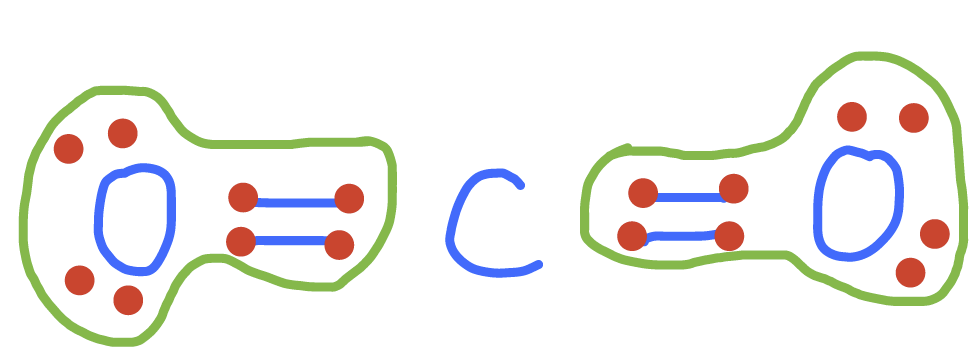 | nitrate 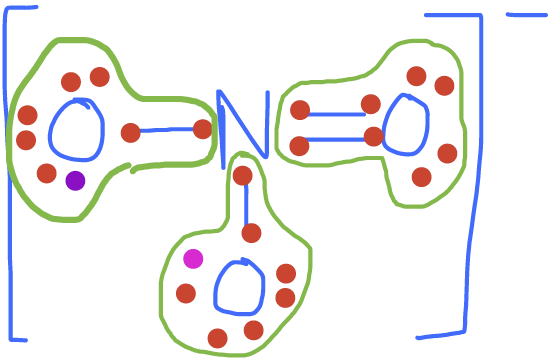 | sulfate 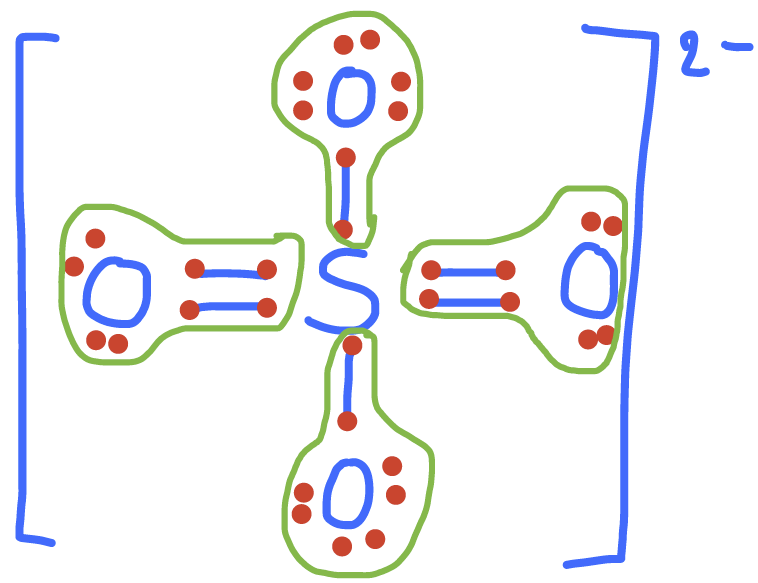 | phosphate 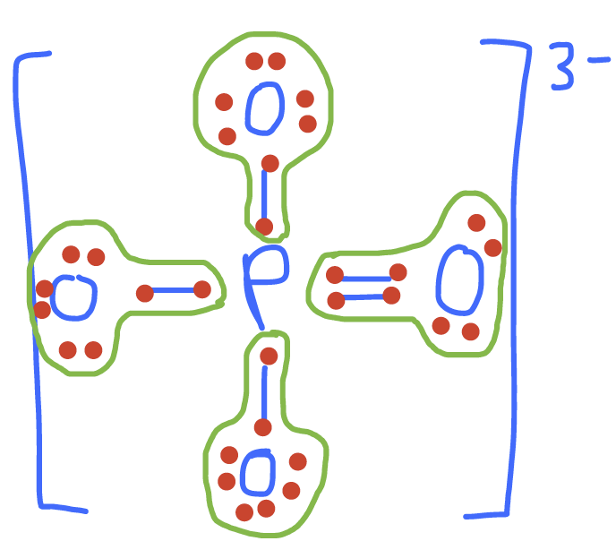 |
| 1 | C#1 pyruvic acid 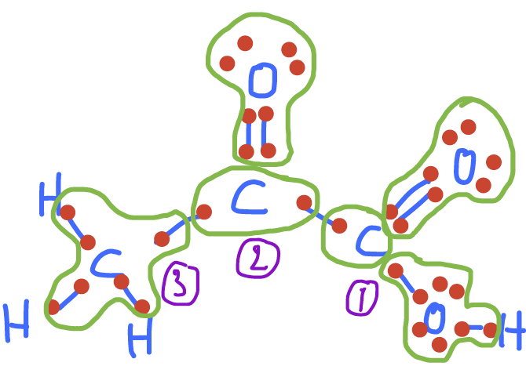 | |||
| 2 | C#2 pyruvic acid carbon monoxide | nitrite 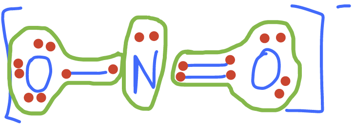 | sulfite 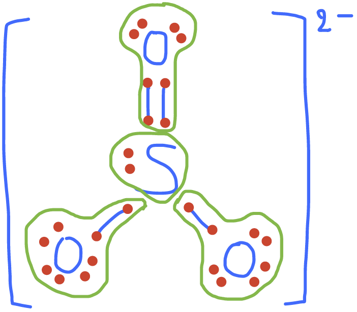 sulfur dioxide 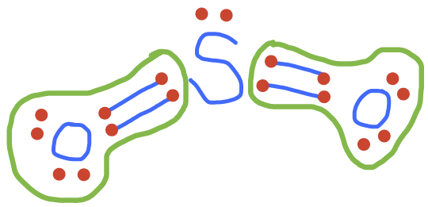 | |
| 3 | C#1 of glucose 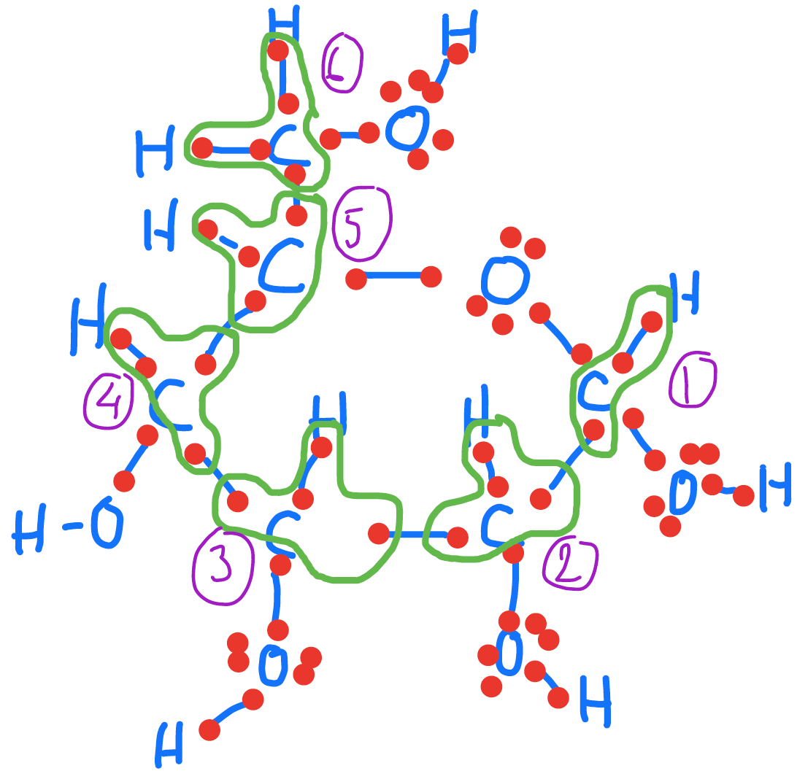 | N#2 of nitrous oxide 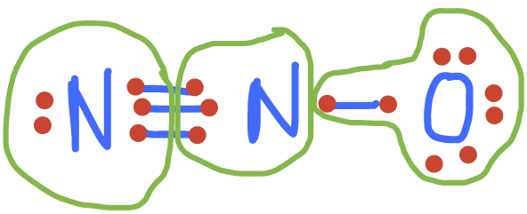 | ||
| 4 | C#2 to C#5 of glucose | |||
| 5 | C#6 of glucose | dinitrogen 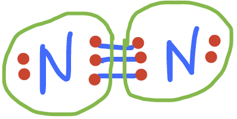 nitrogen monoxide 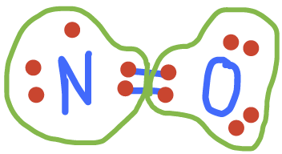 N#1 of nitrous oxide | ||
| 6 | C of fatty acid 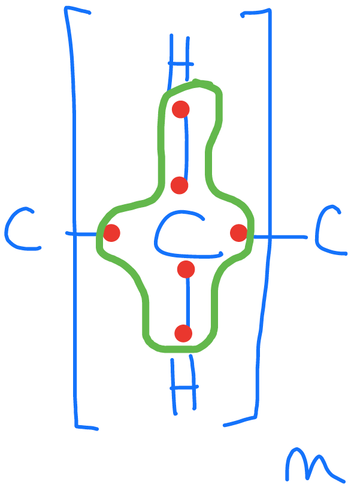 | |||
| 7 | pyruvic acid (C#3) | |||
| 8 | methane 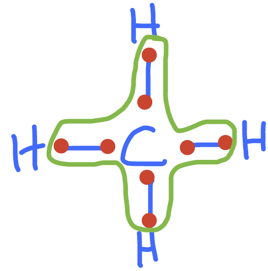 | ammonium 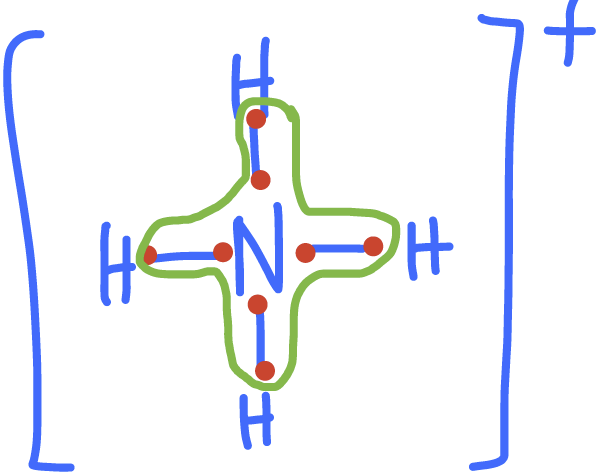 ammonia 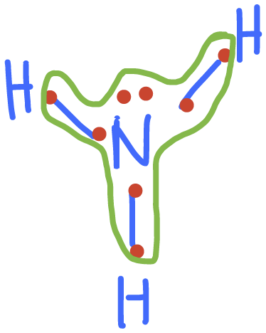 amine groups in amino-acids 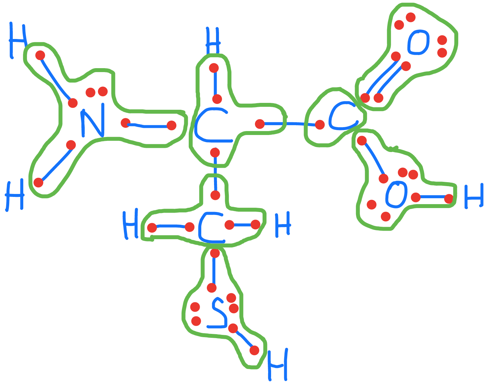 | dihydrogen sulfide 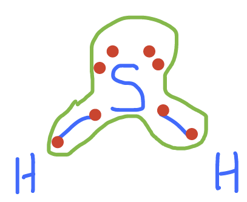 hydrogen sulfide 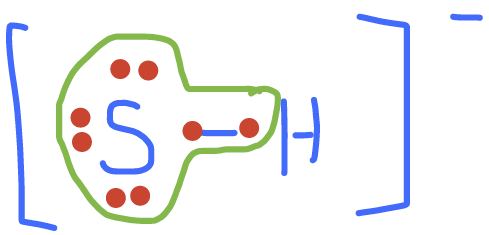 sulfide 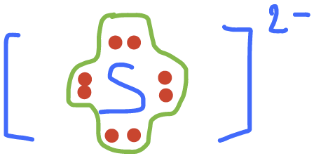 thiol groups in organic molecules |
4.6 Other important things about code chunks
Code chunks (but not inline code) can take a lot of options which modify how they are run, and how they appear in the document. These options go after the initial r and before the closing } that announces the start of a code chunk. One of the most common options turns off printing out the code, but leaves the results alone: ```{r, echo=FALSE}
Another runs the code, but includes neither the text of the code nor its output. ```{r, include=FALSE} This might seem pointless, but it can be useful for code chunks which do set-up like loading data files, or initial model estimates, etc.
Another option prints the code in the document, but does not run it: ```{r, eval=FALSE} This is useful if you want to talk about the (nicely formatted) code.
Another option on the results of the code is that it generate all results “as-is”, which is very nice when your code generates mark-up text to be rendered by Pandoc.
```{r, results="asis"}
By default, the results of a chunk with have ## as a prefix. You can remove this by putting
```{r, comment=FALSE}
Sometimes, running of the code will generate warnings and messages. These can be turned off in the output by using
```{r, warning=FALSE, message = FALSE}
4.7 Naming Chunks
You can give chunks names immediately after their opening, like ```{r, clevername}. This name is then used for the images (or other files) that are generated when the document is rendered.
4.8 Adjusting figure sizes and alignments
These details are discussed in the accompanying written article on instantaneous vs. interval-average flow data.
4.8.0.1 “Caching” Code Chunks (Re-Running Only When Changed)
By default, R Markdown will re-run all of your code every time you render your document. If some of your code is slow, this can add up to a lot of time. You can, however, ask R Markdown to keep track of whether a chunk of code has changed, and only re-run it if it has. This is called caching the chunk.
```{r, cache=TRUE}
summary(cars)
```summary(cars)## speed dist
## Min. : 4.0 Min. : 2.00
## 1st Qu.:12.0 1st Qu.: 26.00
## Median :15.0 Median : 36.00
## Mean :15.4 Mean : 42.98
## 3rd Qu.:19.0 3rd Qu.: 56.00
## Max. :25.0 Max. :120.00One issue is that a chunk of code which hasn’t changed itself might call on results of earlier, modified chunks, and then we would want to re-run the downstream chunks. There are options for manually telling R Markdown “this chunk depends on this earlier chunk”, but it’s generally easier to let it take care of that, by setting the autodep=TRUE option.
- If you load a package with the
library()command, R Markdown isn’t smart enough to check whether the package has changed (or indeed been installed, if you were missing it). So that won’t trigger an automatic re-running of a cached code chunk. - To manually force re-running all code chunks, the easiest thing to do is to delete the directory R Markdown will create (named something like filename
_cache) which it uses to store the state of all code chunks.
4.8.0.2 Setting Defaults for All Chunks
You can tell R to set some defaults to apply to all chunks where you don’t specifically over-ride them. Here are the ones I generally use:
```{r, eval=FALSE}
# Need the knitr package to set chunk options
library(knitr)
# Set knitr options for knitting code into the report:
# - Don't print out code (echo)
# - Save results so that code blocks aren't re-run unless code changes (cache),
# _or_ a relevant earlier code block changed (autodep), but don't re-run if the
# only thing that changed was the comments (cache.comments)
# - show the error messages (message)
# - Don't clutter R output with warnings (warning)
# This _will_ leave error messages showing up in the knitted report
opts_chunk$set(echo=FALSE,
cache=TRUE, autodep=TRUE, cache.comments=FALSE,
message=TRUE, warning=FALSE)
```This sets some additional options beyond the ones I’ve discussed, like not re-running a chunk if only the comments have changed (cache.comments = FALSE), and leaving out messages and warnings. (I’d only recommend suppressing warnings once you’re sure your code is in good shape.) I would typically give this set-up chunk itself the option include=FALSE.
You can over-ride these defaults by setting options for individual chunks.
4.8.0.3 More Chunk options
See [http://yihui.name/knitr/options/] for a complete listing of possible chunk options.